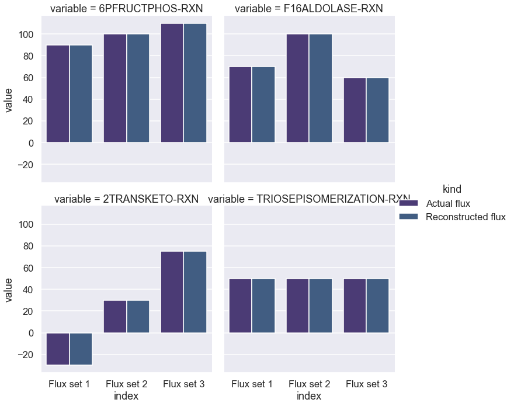

[1]:
import numpy as np
from scipy import linalg
from scipy.special import logsumexp
import seaborn as sns
import pandas as pd
import os
import matplotlib.pyplot as plt
import networkx as nx
from sklearn.preprocessing import MinMaxScaler, StandardScaler
import dill
from equilibrator_api import ComponentContribution, Q_, Reaction
import requests
import xmltodict
import pint
import cvxpy as cp
import itertools
import copy
from convex_kinetics import ConvexKinetics
sns.set(style='darkgrid', palette='viridis', context='talk')
os.chdir(os.path.expanduser('~/vivarium-ecoli'))
A + B -E1> C -E2> D
B -E3> F
A -E4> G
Testing eQuilibrator
[2]:
cc = ComponentContribution()
# optional: changing the aqueous environment parameters
cc.p_h = Q_(7.4)
cc.p_mg = Q_(3.0)
cc.ionic_strength = Q_("0.25M")
cc.temperature = Q_("298.15K")
[3]:
from equilibrator_api import Reaction
compound_ids = ["WATER", "ADP", "ATP", "Pi"]
compound_dict = {cid : cc.get_compound(f"metacyc.compound:{cid}") for cid in compound_ids}
atpase_reaction = Reaction({
compound_dict["ATP"]: -1,
compound_dict["WATER"]: -1,
compound_dict["ADP"]: 1,
compound_dict["Pi"]: 1,
})
[4]:
standard_dg_prime = cc.standard_dg_prime(atpase_reaction)
standard_dg_prime
[4]:
(-29.14 ± 0.30) kilojoule/mole
[5]:
cytoplasmic_p_h = Q_(7.5)
cytoplasmic_ionic_strength = Q_("250 mM")
periplasmic_p_h = Q_(7.0)
periplasmic_ionic_strength = Q_("200 mM")
e_potential_difference = Q_("0.15 V")
cytoplasmic_reaction = "bigg.metabolite:pep = bigg.metabolite:g6p + bigg.metabolite:pyr"
periplasmic_reaction = "bigg.metabolite:glc__D = "
cc = ComponentContribution()
cc.p_h = cytoplasmic_p_h
cc.ionic_strength = cytoplasmic_ionic_strength
standard_dg_prime = cc.multicompartmental_standard_dg_prime(
cc.parse_reaction_formula(cytoplasmic_reaction),
cc.parse_reaction_formula(periplasmic_reaction),
e_potential_difference=e_potential_difference,
p_h_outer=periplasmic_p_h,
ionic_strength_outer=periplasmic_ionic_strength,
)
print(standard_dg_prime)
(-44.8 +/- 0.6) kilojoule / mole
[6]:
cc.get_compound_by_inchi("WQZGKKKJIJFFOK-GASJEMHNSA-N")
Using eQuilibrator to generate equilibrium constants
[7]:
s = requests.Session() # create session
# Post login credentials to session:
s.post('https://websvc.biocyc.org/credentials/login/', data={'email':'cellulararchitect@protonmail.com', 'password':'Cellman0451'})
# Issue web service request:
r = s.get('https://websvc.biocyc.org/getxml?id=ECOLI:6PFRUCTPHOS-RXN&detail=low&fmt=json')
[8]:
name = 'F16ALDOLASE-RXN'
r = s.get(f'https://websvc.biocyc.org/getxml?id=ECOLI:{name}&detail=low&fmt=json')
o = xmltodict.parse(r.content)['ptools-xml']
o['Reaction']['enzymatic-reaction']['Enzymatic-Reaction'][0]['@frameid']
[8]:
'F16ALDOLASE-ENZRXN-CLASSI'
[9]:
rxns_names = ['6PFRUCTPHOS-RXN', 'F16ALDOLASE-RXN', '2TRANSKETO-RXN', 'TRIOSEPISOMERIZATION-RXN']
rxns_dict = {}
stoich_dict = {}
regulation_dict = {}
for name in rxns_names:
r = s.get(f'https://websvc.biocyc.org/getxml?id=ECOLI:{name}&detail=low&fmt=json')
rxn = xmltodict.parse(r.content)['ptools-xml']
rxn_dict = {}
stoich_loop_dict = {}
regulation_loop_dict = {}
left = rxn['Reaction']['left']
right = rxn['Reaction']['right']
# i will know exact complex in model (connected to rxn), but for now will pick random
enz_rxn = rxn['Reaction']['enzymatic-reaction']['Enzymatic-Reaction']
if type(left) is dict:
left = [left]
if type(right) is dict:
right = [right]
if type(enz_rxn) is dict:
enz_rxn = [enz_rxn]
enz_rxn_id = enz_rxn[0]['@frameid']
re = s.get(f'https://websvc.biocyc.org/getxml?id=ECOLI:{enz_rxn_id}&detail=high&fmt=json')
oe = xmltodict.parse(re.content)['ptools-xml']['Enzymatic-Reaction']['regulated-by']['Regulation']
if type(oe) is dict:
oe = [oe]
# add regulators, target regulator directly with id to get info like irreversible, etc
for regulator in oe:
reg_name = regulator['regulator']['Compound']['@frameid']
reg_type = regulator['mode']['#text']
reg_type = 1 if reg_type == '+' else -1
regulation_loop_dict[reg_name] = reg_type
for mol in left:
if type(mol) is dict:
cid = mol['Compound']['@frameid']
mol_cc = cc.get_compound(f"metacyc.compound:{cid}")
rxn_dict[mol_cc] = -1
stoich_loop_dict[cid] = -1
for mol in right:
if type(mol) is dict:
cid = mol['Compound']['@frameid']
mol_cc = cc.get_compound(f"metacyc.compound:{cid}")
rxn_dict[mol_cc] = 1
stoich_loop_dict[cid] = 1
rxns_dict[name] = Reaction(rxn_dict)
stoich_dict[name] = stoich_loop_dict
regulation_dict[name] = regulation_loop_dict
rxns_dict
[9]:
{'6PFRUCTPHOS-RXN': <equilibrator_api.phased_reaction.PhasedReaction at 0x107326790>,
'F16ALDOLASE-RXN': <equilibrator_api.phased_reaction.PhasedReaction at 0x15a791dc0>,
'2TRANSKETO-RXN': <equilibrator_api.phased_reaction.PhasedReaction at 0x294568cd0>,
'TRIOSEPISOMERIZATION-RXN': <equilibrator_api.phased_reaction.PhasedReaction at 0x15a9bdd90>}
[10]:
(standard_dg_prime, dg_uncertainty) = cc.standard_dg_prime_multi(list(rxns_dict.values()), uncertainty_representation="cov")
[11]:
standard_dg_prime
[11]:
| Magnitude | [-21.05010908198642 22.047924530096907 -5.946115510564027 |
|---|---|
| Units | kilojoule/mole |
[12]:
dg_uncertainty
[12]:
| Magnitude | [[1.5398212990074922 -2.2167471180569773 0.6541085596545129 |
|---|---|
| Units | kilojoule2/mole2 |
[13]:
R = 0.008314 # kJ/mol*K
T = 298.15 # K
[14]:
dG = standard_dg_prime._magnitude
keq = np.exp(-dG/(R*T))
keq
K_eq = np.log(keq)
Calculating set of kinetic parameters with given equilibrium constants and arbitrary fluxes
[15]:
Sd = pd.DataFrame(stoich_dict, dtype=np.int8).fillna(0).astype(np.int8)
# Sd = Sd.iloc[0:7, 0:2]
n_rxn = Sd.shape[1]
n_met = Sd.shape[0]
Sd
Sd["6PFRUCTPHOS-RXN"] = Sd["6PFRUCTPHOS-RXN"] # * 2
Sd
[15]:
| 6PFRUCTPHOS-RXN | F16ALDOLASE-RXN | 2TRANSKETO-RXN | TRIOSEPISOMERIZATION-RXN | |
|---|---|---|---|---|
| FRUCTOSE-6P | -1 | 0 | 1 | 0 |
| ATP | -1 | 0 | 0 | 0 |
| PROTON | 1 | 0 | 0 | 0 |
| ADP | 1 | 0 | 0 | 0 |
| FRUCTOSE-16-DIPHOSPHATE | 1 | -1 | 0 | 0 |
| DIHYDROXY-ACETONE-PHOSPHATE | 0 | 1 | 0 | 1 |
| GAP | 0 | 1 | 1 | -1 |
| ERYTHROSE-4P | 0 | 0 | -1 | 0 |
| XYLULOSE-5-PHOSPHATE | 0 | 0 | -1 | 0 |
[16]:
Sr_min = pd.DataFrame(regulation_dict).fillna(0).astype(np.int8)
Sr = Sd.copy()
Sr.loc[:,:] = 0
Sr.loc[Sd.index.intersection(Sr_min.index), :] = Sr_min.loc[Sd.index.intersection(Sr_min.index), :]
Sr
[16]:
| 6PFRUCTPHOS-RXN | F16ALDOLASE-RXN | 2TRANSKETO-RXN | TRIOSEPISOMERIZATION-RXN | |
|---|---|---|---|---|
| FRUCTOSE-6P | 1 | 0 | 0 | 0 |
| ATP | 0 | 0 | 0 | 0 |
| PROTON | 0 | 0 | 0 | 0 |
| ADP | 1 | 0 | 0 | 0 |
| FRUCTOSE-16-DIPHOSPHATE | 0 | 0 | 0 | 0 |
| DIHYDROXY-ACETONE-PHOSPHATE | 0 | 0 | 0 | 0 |
| GAP | 0 | 0 | 0 | 0 |
| ERYTHROSE-4P | 0 | 0 | 0 | 0 |
| XYLULOSE-5-PHOSPHATE | 0 | 0 | 0 | 0 |
[17]:
K_eq = np.log(keq)
K_eq_mod = K_eq[:, np.newaxis].T
vE = np.array([[90, 70, -30, 50], [100, 100, 30, 50], [110, 60, 75, 50]])
# vE[:, 0] = vE[:, 0] / 2
n_flux_set = vE.shape[0]
# K_eq[vE < 0] = 1/K_eq[vE < 0]
lvE = np.log(np.abs(vE))
pd.DataFrame(np.concatenate([K_eq_mod, vE, np.sign(vE, dtype=np.int8)]), columns=Sd.columns,
index=["$K_{eq}$", "$v_1$", "$v_2$", "$v_3$", "sign 1", "sign 2", "sign 3"])
[17]:
| 6PFRUCTPHOS-RXN | F16ALDOLASE-RXN | 2TRANSKETO-RXN | TRIOSEPISOMERIZATION-RXN | |
|---|---|---|---|---|
| $K_{eq}$ | 8.491991 | -8.894527 | 2.398769 | 2.266298 |
| $v_1$ | 90.000000 | 70.000000 | -30.000000 | 50.000000 |
| $v_2$ | 100.000000 | 100.000000 | 30.000000 | 50.000000 |
| $v_3$ | 110.000000 | 60.000000 | 75.000000 | 50.000000 |
| sign 1 | 1.000000 | 1.000000 | -1.000000 | 1.000000 |
| sign 2 | 1.000000 | 1.000000 | 1.000000 | 1.000000 |
| sign 3 | 1.000000 | 1.000000 | 1.000000 | 1.000000 |
[18]:
# set up variables
S_mol = np.array(Sd)
S = np.sign(S_mol) #
S_s = -np.copy(S) # reverse neg sign
S_p = np.copy(S)
S_s[S > 0] = 0 # zeros products
S_p[S < 0] = 0 # zeros substrates
S_i = np.copy(np.array(Sr) == -1) # reaction direction does not matter
S_a = np.copy(np.array(Sr) == 1)
S_s_nz = np.array(S_s.nonzero())
S_p_nz = np.array(S_p.nonzero())
S_i_nz = np.array(S_i.nonzero())
S_a_nz = np.array(S_a.nonzero())
S_s_mol = np.abs(S_mol)[S_s.nonzero()]
S_p_mol = np.abs(S_mol)[S_p.nonzero()]
# TODO Refactor all the below lines as one liners
# first coordinate, e.g. metabolites w nonzero substrate/product coeff across all reactions. also works as substrate indices.
met_s_nz = S_s_nz[0, :]
met_p_nz = S_p_nz[0, :]
met_i_nz = S_i_nz[0, :]
met_a_nz = S_a_nz[0, :]
# second coordinate, e.g. reactions indices for those concentrations. works to index substrates as well.
rxn_s_nz = S_s_nz[1, :]
rxn_p_nz = S_p_nz[1, :]
rxn_i_nz = S_i_nz[1, :]
rxn_a_nz = S_a_nz[1, :]
# one dim is always 2
n_Km_s = np.max(met_s_nz.shape)
n_Km_p = np.max(met_p_nz.shape)
n_Km_i = np.max(met_i_nz.shape)
n_Km_a = np.max(met_a_nz.shape)
c = cp.Variable([n_met, n_flux_set])
Km_s = cp.Variable(n_Km_s)
Km_p = cp.Variable(n_Km_p)
Km_i = cp.Variable(n_Km_i) if n_Km_i else None
Km_a = cp.Variable(n_Km_a) if n_Km_a else None
cfwd = cp.Variable(n_rxn)
crev = cp.Variable(n_rxn)
# define y vecs
y_s_t = []
y_p_t = []
y_i_t = []
y_a_t = []
# define Km positions by nonzero S matrix concentrations. Activation is reverse val of inhibition.
# TODO Add molecularity here.
for i in range(n_flux_set):
y_s_t.append(cp.multiply(S_s_mol, c[met_s_nz, i] - Km_s))
y_p_t.append(cp.multiply(S_p_mol, c[met_p_nz, i] - Km_p))
y_i_t.append(c[met_i_nz, i] - Km_i if n_Km_i else None)
y_a_t.append(-(c[met_a_nz, i] - Km_a) if n_Km_a else None)
y_s = cp.vstack(y_s_t)
y_p = cp.vstack(y_p_t)
y_i = cp.vstack(y_i_t)
y_a = cp.vstack(y_a_t)
# saturation stacks
y_f_vec = [y_s]
y_r_vec = [y_p]
if n_Km_i:
y_f_vec.append(y_i)
y_r_vec.append(y_i)
if n_Km_a:
y_f_vec.append(y_a)
y_r_vec.append(y_a)
y_f = cp.hstack(y_f_vec)
y_r = cp.hstack(y_r_vec)
[19]:
# number of saturation terms for sub, prod
S_s_comb = np.concatenate((S_s, S_i, S_a), axis=0)
S_p_comb = np.concatenate((S_p, S_i, S_a), axis=0)
n_alpha = np.sum(np.power(2, np.sign(S_s_comb).sum(axis=0)) - 1)
n_beta = np.sum(np.power(2, np.sign(S_p_comb).sum(axis=0)) - 1)
# saturation matrix setup, first sub, then inhib, then act.
C_alpha = np.zeros([n_alpha, len(met_s_nz) + len(met_i_nz) + len(met_a_nz)])
C_beta = np.zeros([n_beta, len(met_p_nz) + len(met_i_nz) + len(met_a_nz)])
# to separate different reactions saturation terms to their individual reaction equations.
d_alpha = np.zeros(n_alpha, dtype=np.int8)
d_beta = np.zeros(n_beta, dtype=np.int8)
idx = 0
for i in range(n_rxn):
# pick one reaction at a time (get substrate indicies)
#idx_cur_rxn = rxn_s_nz == i
# TODO This does not properly multiply by molecularity. Alternatively, generate C_alpha and
# TODO beta without molecularity (first ==1) and then multiply by molecularity in the end.
idx_cur_rxn = np.concatenate((rxn_s_nz == i, rxn_i_nz == i, rxn_a_nz == i))
# generates all binary permutations minus the first one since that would result in -1
sat_perm = np.array(list(itertools.product([0, 1], repeat=sum(idx_cur_rxn))))
sat_perm = sat_perm[1:, :]
r, _ = sat_perm.shape
# replace zeros with saturation matrix
C_alpha[idx:(idx+r), idx_cur_rxn] = sat_perm
d_alpha[idx:(idx+r)] = i
idx += r # add row #
idx = 0
for i in range(n_rxn):
idx_cur_rxn = np.concatenate((rxn_p_nz == i, rxn_i_nz == i, rxn_a_nz == i))
sat_perm = np.array(list(itertools.product([0, 1], repeat=sum(idx_cur_rxn))))
sat_perm = sat_perm[1:, :]
r, _ = sat_perm.shape
C_beta[idx:(idx+r), idx_cur_rxn] = sat_perm
d_beta[idx:(idx+r)] = i
idx += r # add row #
[20]:
C_alpha
[20]:
array([[0., 0., 0., 0., 0., 0., 0., 1.],
[0., 0., 0., 0., 0., 0., 1., 0.],
[0., 0., 0., 0., 0., 0., 1., 1.],
[0., 1., 0., 0., 0., 0., 0., 0.],
[0., 1., 0., 0., 0., 0., 0., 1.],
[0., 1., 0., 0., 0., 0., 1., 0.],
[0., 1., 0., 0., 0., 0., 1., 1.],
[1., 0., 0., 0., 0., 0., 0., 0.],
[1., 0., 0., 0., 0., 0., 0., 1.],
[1., 0., 0., 0., 0., 0., 1., 0.],
[1., 0., 0., 0., 0., 0., 1., 1.],
[1., 1., 0., 0., 0., 0., 0., 0.],
[1., 1., 0., 0., 0., 0., 0., 1.],
[1., 1., 0., 0., 0., 0., 1., 0.],
[1., 1., 0., 0., 0., 0., 1., 1.],
[0., 0., 1., 0., 0., 0., 0., 0.],
[0., 0., 0., 0., 0., 1., 0., 0.],
[0., 0., 0., 0., 1., 0., 0., 0.],
[0., 0., 0., 0., 1., 1., 0., 0.],
[0., 0., 0., 1., 0., 0., 0., 0.]])
[21]:
n_lse_terms = np.max(np.power(2, S_s.sum(axis=0)) + np.power(2, S_p.sum(axis=0)) - 2)
LSE_expr = []
denom_expr = []
sign = np.sign(vE)
lvE = np.log(sign * vE)
for j in range(n_flux_set):
for i in range(n_rxn):
# sum terms are separate in logsumexp. one per saturation term (row in C_alpha, C_beta)
n_term_s = np.sum(d_alpha == i)
n_term_p = np.sum(d_beta == i)
n_term = n_term_s + n_term_p
Km_s_idx = np.nonzero(S_s_nz[1, :] == i)
S_s_idx = S_s_nz[0, S_s_nz[1, :] == i] # negate -1 entries
Km_p_idx = np.nonzero(S_p_nz[1, :] == i)
S_p_idx = S_p_nz[0, S_p_nz[1, :] == i]
if sign[j, i] == 1:
LSE_expr.append(cp.hstack( [
lvE[j, i] + (C_alpha @ cp.vec(y_f[j, :]))[d_alpha == i]
- cp.multiply(np.ones(n_term_s), - S.T[i, S_s_idx] @ cp.vec(y_s[j, Km_s_idx])) - cfwd[i],
lvE[j, i] + (C_beta @ cp.vec(y_r[j, :]))[d_beta == i]
- cp.multiply(np.ones(n_term_p), - S.T[i, S_s_idx] @ cp.vec(y_s[j, Km_s_idx])) - cfwd[i],
lvE[j, i] + 0 - cp.multiply(np.ones(1), -S.T[i, S_s_idx] @ cp.vec(y_s[j, Km_s_idx])) - cfwd[i],
cp.multiply(np.ones(1), S.T[i, S_p_idx] @ cp.vec(y_p[j, Km_p_idx])) + crev[i]
- cp.multiply(np.ones(1), -S.T[i, S_s_idx] @ cp.vec(y_s[j, Km_s_idx])) - cfwd[i],
]
)
) # remove +1 here, could also have cfwd outside objec.
denom_expr.append(cp.multiply(np.ones(1), -S.T[i, S_s_idx] @ cp.vec(y_s[j, Km_s_idx])) + cfwd[i],)
# keep saturation term the same, switch around fwd and rev terms. flip all signs with S matrix since it's signed.
if sign[j, i] == -1:
LSE_expr.append(cp.hstack( [ lvE[j, i] + (C_alpha @ cp.vec(y_f[j, :]))[d_alpha == i]
- cp.multiply(np.ones(n_term_s), S.T[i, S_p_idx] @ cp.vec(y_p[j, Km_p_idx])) - crev[i],
lvE[j, i] + (C_beta @ cp.vec(y_r[j, :]))[d_beta == i]
- cp.multiply(np.ones(n_term_p), S.T[i, S_p_idx] @ cp.vec(y_p[j, Km_p_idx])) - crev[i],
lvE[j, i] + 0 - cp.multiply(np.ones(1), S.T[i, S_p_idx] @ cp.vec(y_p[j, Km_p_idx])) - crev[i],
cp.multiply(np.ones(1), - S.T[i, S_s_idx] @ cp.vec(y_s[j, Km_s_idx])) + cfwd[i]
- cp.multiply(np.ones(1), S.T[i, S_p_idx] @ cp.vec(y_p[j, Km_p_idx])) - crev[i],
]
)
)
denom_expr.append(cp.multiply(np.ones(1), S.T[i, S_p_idx] @ cp.vec(y_p[j, Km_p_idx])) + crev[i])
#LSE_expr = cp.vstack(LSE_expr)
LSE_expr
[21]:
[Expression(AFFINE, UNKNOWN, (48,)),
Expression(AFFINE, UNKNOWN, (6,)),
Expression(AFFINE, UNKNOWN, (8,)),
Expression(AFFINE, UNKNOWN, (4,)),
Expression(AFFINE, UNKNOWN, (48,)),
Expression(AFFINE, UNKNOWN, (6,)),
Expression(AFFINE, UNKNOWN, (8,)),
Expression(AFFINE, UNKNOWN, (4,)),
Expression(AFFINE, UNKNOWN, (48,)),
Expression(AFFINE, UNKNOWN, (6,)),
Expression(AFFINE, UNKNOWN, (8,)),
Expression(AFFINE, UNKNOWN, (4,))]
[22]:
l = 0.001
e = 0.001
f = 0.000001
reg = cp.sum(cp.hstack([cfwd, crev, cp.vec(c)])) + cp.sum(cp.hstack([-Km_s, -Km_p])) # regularization
reg2 = cp.norm1(cp.hstack([cfwd, crev, cp.vec(c)])) + cp.norm1(cp.hstack([-Km_s, -Km_p])) # regularization
reg3 = cp.sum(cp.huber(cp.hstack([y_s, y_p]), 1)) # issue with matrix
if n_Km_i:
reg += cp.sum(cp.hstack([-Km_i]))
if n_Km_a:
reg += cp.sum(cp.hstack([-Km_a]))
#reg3 = cp.norm1(cp.hstack([y_s, y_p])) # take a look at this
loss = 0
for i in range(len(LSE_expr)):
loss += cp.norm1(cp.pos(cp.log_sum_exp(LSE_expr[i])))
for i in range(len(denom_expr)):
loss += 0.01 * denom_expr[i]
loss += l * reg
loss += e * reg2
# loss += f * reg3
#
[23]:
constr = [cp.hstack([cfwd, crev, cp.vec(c), Km_s, Km_p]) >= -12,
cp.hstack([cfwd, crev, cp.vec(c), Km_s, Km_p]) <= 12,
]
if n_Km_i:
constr.extend([Km_i >= -12, Km_i <= 12])
if n_Km_a:
constr.extend([Km_a >= -12, Km_a <= 12])
[24]:
haldane = []
fwd_flux = []
for i, r in enumerate(S.T):
Km_s_idx = np.nonzero(S_s_nz[1, :] == i)
S_s_idx = S_s_nz[0, S_s_nz[1, :] == i] # negate -1 entries
Km_p_idx = np.nonzero(S_p_nz[1, :] == i)
S_p_idx = S_p_nz[0, S_p_nz[1, :] == i]
haldane.append(K_eq[i] == cfwd[i] - crev[i] + r[S_p_idx] @ Km_p[Km_p_idx] - (-r[S_s_idx]) @ Km_s[Km_s_idx])
for j in range(n_flux_set):
for i, r in enumerate(S.T):
Km_s_idx = np.nonzero(S_s_nz[1, :] == i)
S_s_idx = S_s_nz[0, S_s_nz[1, :] == i] # negate -1 entries
Km_p_idx = np.nonzero(S_p_nz[1, :] == i)
S_p_idx = S_p_nz[0, S_p_nz[1, :] == i]
if sign[j, i] == 1:
fwd_flux.append(cfwd[i] + (-r[S_s_idx]) @ cp.vec(y_s[j, Km_s_idx]) - (crev[i] + r[S_p_idx] @ cp.vec(y_p[j, Km_p_idx])) >= 0) # add minus since s matrix has minus
if sign[j, i] == -1:
fwd_flux.append(cfwd[i] + (-r[S_s_idx]) @ cp.vec(y_s[j, Km_s_idx]) - (crev[i] + r[S_p_idx] @ cp.vec(y_p[j, Km_p_idx])) <= 0) # add minus since s matrix has minus
constr.extend([cp.multiply(S.T @ cp.vec(c[:, j]), sign[j, :]) <= cp.multiply(K_eq, sign[j, :])])
constr.extend(haldane)
constr.extend(fwd_flux)
[25]:
p = cp.Problem(cp.Minimize(loss), constr)
p.solve(verbose=True, solver=cp.ECOS)
===============================================================================
CVXPY
v1.3.0
===============================================================================
(CVXPY) Apr 19 12:13:47 PM: Your problem has 51 variables, 23 constraints, and 0 parameters.
(CVXPY) Apr 19 12:13:47 PM: It is compliant with the following grammars: DCP, DQCP
(CVXPY) Apr 19 12:13:47 PM: (If you need to solve this problem multiple times, but with different data, consider using parameters.)
(CVXPY) Apr 19 12:13:47 PM: CVXPY will first compile your problem; then, it will invoke a numerical solver to obtain a solution.
-------------------------------------------------------------------------------
Compilation
-------------------------------------------------------------------------------
(CVXPY) Apr 19 12:13:47 PM: Compiling problem (target solver=ECOS).
(CVXPY) Apr 19 12:13:47 PM: Reduction chain: Dcp2Cone -> CvxAttr2Constr -> ConeMatrixStuffing -> ECOS
(CVXPY) Apr 19 12:13:47 PM: Applying reduction Dcp2Cone
(CVXPY) Apr 19 12:13:48 PM: Applying reduction CvxAttr2Constr
(CVXPY) Apr 19 12:13:48 PM: Applying reduction ConeMatrixStuffing
(CVXPY) Apr 19 12:13:48 PM: Applying reduction ECOS
(CVXPY) Apr 19 12:13:48 PM: Finished problem compilation (took 2.834e-01 seconds).
-------------------------------------------------------------------------------
Numerical solver
-------------------------------------------------------------------------------
(CVXPY) Apr 19 12:13:48 PM: Invoking solver ECOS to obtain a solution.
-------------------------------------------------------------------------------
Summary
-------------------------------------------------------------------------------
(CVXPY) Apr 19 12:13:48 PM: Problem status: optimal
(CVXPY) Apr 19 12:13:48 PM: Optimal value: 6.528e-01
(CVXPY) Apr 19 12:13:48 PM: Compilation took 2.834e-01 seconds
(CVXPY) Apr 19 12:13:48 PM: Solver (including time spent in interface) took 1.456e-02 seconds
[25]:
0.6527584055951395
[26]:
print('Substrate Km:', [f'{val:.3f}' for val in np.exp(Km_s.value)])
print('Product Km:', [f'{val:.3f}' for val in np.exp(Km_p.value)])
print('Fwd kcat:', [f'{val:.3f}' for val in np.exp(cfwd.value)])
print('Rev kcat:', [f'{val:.3f}' for val in np.exp(crev.value)])
concs = np.exp(c.value).T
for row in concs:
print('Concentration:', [f'{val:.4f}' for val in row])
if n_Km_i:
print('Inhibition Km:', [f'{val:.3f}' for val in np.exp(Km_i.value)])
if n_Km_a:
print('Activation Km:', [f'{val:.3f}' for val in np.exp(Km_a.value)])
Substrate Km: ['23.895', '10.336', '11.495', '1.058', '1.792', '1.792']
Product Km: ['31.112', '1.000', '1.463', '20.747', '0.193', '0.999', '1.000', '1.000']
Fwd kcat: ['39678.055', '1329.487', '5070.525', '850.010']
Rev kcat: ['1.000', '162732.740', '4459.575', '83.212']
Concentration: ['3.7831', '0.1928', '0.0000', '0.0542', '0.6843', '0.0000', '0.0662', '0.0000', '0.0000']
Concentration: ['0.8177', '1.0000', '0.0000', '0.0535', '1.0000', '0.0000', '0.0662', '0.1719', '0.1719']
Concentration: ['0.8840', '1.0000', '0.0000', '0.0538', '0.5823', '0.0000', '0.0662', '0.2698', '0.2698']
Activation Km: ['0.020', '0.001']
[27]:
for v in LSE_expr:
#print(v.value)
print(logsumexp(v.value))
-1.2318670264410692e-06
-1.7973949556493451e-07
-1.3402584234101234e-07
-1.879367122550879e-07
-1.0730806483949529e-06
-1.5509767609112046e-07
-2.3356220052450638e-07
-1.0040084171686336e-07
-1.1511763194360647e-06
-1.81464080317717e-07
-2.2208496253117715e-07
-1.088128343332273e-07
Perfect? Wow.
Check flux reconstruction with inhibition/activation
[28]:
reconstructed_vE = np.zeros(vE.shape)
for j in range(n_flux_set):
sat_expr = []
fwd_sat = np.zeros(n_rxn)
back_sat = np.zeros(n_rxn)
sat = np.zeros(n_rxn)
for i in range(n_rxn):
# sum terms are separate in logsumexp. one per saturation term (row in C_alpha, C_beta)
n_term_s = np.sum(d_alpha == i)
n_term_p = np.sum(d_beta == i)
n_term = n_term_s + n_term_p
Km_s_idx = np.nonzero(S_s_nz[1, :] == i)
S_s_idx = S_s_nz[0, S_s_nz[1, :] == i] # negate -1 entries
Km_p_idx = np.nonzero(S_p_nz[1, :] == i)
S_p_idx = S_p_nz[0, S_p_nz[1, :] == i]
#S_s_idx = S_s_nz[0, S_s_nz[1, :] == i]
sat_expr.append( [ (C_alpha @ y_f.value[j, :].flatten())[d_alpha == i] ,
(C_beta @ y_r.value[j, :].flatten())[d_beta == i],
0,
#-1*np.ones(n_lse_terms - n_term + 1)
]
)
fwd_sat[i] = (np.exp(-S.T[i, S_s_idx] @ y_s.value[j, Km_s_idx].flatten())) # + cfwd.value[i]
back_sat[i] = (np.exp(S.T[i, S_p_idx] @ y_p.value[j, Km_p_idx].flatten())) # + cfwd.value[i]
for i, rxn in enumerate(sat_expr):
s = 0
for term in rxn:
s += np.sum(np.exp(term))
sat[i] = (s)
reconstr = np.exp(cfwd.value) * fwd_sat/sat - np.exp(crev.value) * back_sat/sat
print(reconstr)
reconstructed_vE[j, :] = reconstr
[ 90.00011087 70.00001264 -30.00000402 50.0000094 ]
[100.00010731 100.00001556 30.00000841 50.00000502]
[110.00012663 60.00001094 75.00001797 50.00000544]
[29]:
df_vE = pd.DataFrame(vE, columns=Sd.columns, index=["Flux set 1", "Flux set 2", "Flux set 3"]).melt(ignore_index=False).reset_index(drop=False)
df_vE["kind"] = "Actual flux"
df_recon = pd.DataFrame(reconstructed_vE, columns=Sd.columns, index=["Flux set 1", "Flux set 2", "Flux set 3"]).melt(ignore_index=False).reset_index(drop=False)
df_recon["kind"] = "Reconstructed flux"
df_reconstr_comp = pd.concat([df_vE, df_recon]).reset_index(drop=True)
df_reconstr_comp
[29]:
| index | variable | value | kind | |
|---|---|---|---|---|
| 0 | Flux set 1 | 6PFRUCTPHOS-RXN | 90.000000 | Actual flux |
| 1 | Flux set 2 | 6PFRUCTPHOS-RXN | 100.000000 | Actual flux |
| 2 | Flux set 3 | 6PFRUCTPHOS-RXN | 110.000000 | Actual flux |
| 3 | Flux set 1 | F16ALDOLASE-RXN | 70.000000 | Actual flux |
| 4 | Flux set 2 | F16ALDOLASE-RXN | 100.000000 | Actual flux |
| 5 | Flux set 3 | F16ALDOLASE-RXN | 60.000000 | Actual flux |
| 6 | Flux set 1 | 2TRANSKETO-RXN | -30.000000 | Actual flux |
| 7 | Flux set 2 | 2TRANSKETO-RXN | 30.000000 | Actual flux |
| 8 | Flux set 3 | 2TRANSKETO-RXN | 75.000000 | Actual flux |
| 9 | Flux set 1 | TRIOSEPISOMERIZATION-RXN | 50.000000 | Actual flux |
| 10 | Flux set 2 | TRIOSEPISOMERIZATION-RXN | 50.000000 | Actual flux |
| 11 | Flux set 3 | TRIOSEPISOMERIZATION-RXN | 50.000000 | Actual flux |
| 12 | Flux set 1 | 6PFRUCTPHOS-RXN | 90.000111 | Reconstructed flux |
| 13 | Flux set 2 | 6PFRUCTPHOS-RXN | 100.000107 | Reconstructed flux |
| 14 | Flux set 3 | 6PFRUCTPHOS-RXN | 110.000127 | Reconstructed flux |
| 15 | Flux set 1 | F16ALDOLASE-RXN | 70.000013 | Reconstructed flux |
| 16 | Flux set 2 | F16ALDOLASE-RXN | 100.000016 | Reconstructed flux |
| 17 | Flux set 3 | F16ALDOLASE-RXN | 60.000011 | Reconstructed flux |
| 18 | Flux set 1 | 2TRANSKETO-RXN | -30.000004 | Reconstructed flux |
| 19 | Flux set 2 | 2TRANSKETO-RXN | 30.000008 | Reconstructed flux |
| 20 | Flux set 3 | 2TRANSKETO-RXN | 75.000018 | Reconstructed flux |
| 21 | Flux set 1 | TRIOSEPISOMERIZATION-RXN | 50.000009 | Reconstructed flux |
| 22 | Flux set 2 | TRIOSEPISOMERIZATION-RXN | 50.000005 | Reconstructed flux |
| 23 | Flux set 3 | TRIOSEPISOMERIZATION-RXN | 50.000005 | Reconstructed flux |
[30]:
sns.catplot(x="index", y="value", hue="kind", col="variable", kind="bar", data=df_reconstr_comp, height=5, aspect=1, col_wrap=2)
plt.savefig("flux_set_comparison.svg")

Stupid class based method
[31]:
%load_ext autoreload
%autoreload 2
[32]:
from convex_kinetics_new import ConvexKineticsNew
[33]:
E = ConvexKineticsNew()
y_f, y_r, y_s, y_p, y_i, y_a, cfwd, crev, c, Km_s, Km_p, Km_i, Km_a, S_s, S_p, S_i, S_a, \
met_s_nz, met_p_nz, met_i_nz, met_a_nz, rxn_s_nz, rxn_p_nz, rxn_i_nz, rxn_a_nz, \
n_rxn, n_met, n_flux_set, S_s_nz, S_p_nz, S = E.set_up_variables(S_matrix=Sd, R_matrix=Sr, flow_data=vE)
Number of metabolites: 9, number of reactions: 4, number of flux sets: 3
Number of Km_s: 6, number of Km_p: 8, number of Km_i: 0, number of Km_a: 2
Number of concentrations: (9, 3), number of y_f: (3, 8), number of y_r: (3, 10)
[34]:
C_alpha, C_beta, d_alpha, d_beta = E.construct_binding_matrix(n_rxn, S_s, S_p, S_i, S_a, Sr, met_s_nz, met_p_nz, met_i_nz, met_a_nz, rxn_s_nz, rxn_p_nz, rxn_i_nz, rxn_a_nz)
Shape of C_alpha: (20, 8), shape of C_beta: (38, 10)
Shape of d_alpha: (20,), shape of d_beta: (38,)
[35]:
LSE_expr, denom_expr = E.construct_kinetic_objective(vE, n_flux_set, n_rxn, C_alpha, C_beta, d_alpha, d_beta, S_s_nz, S_p_nz, S, y_f, y_r, y_s, y_p, cfwd, crev)
[36]:
loss = E.create_objective_function(cfwd, crev, c, Km_s, Km_p, Km_i, Km_a, y_s, y_p, LSE_expr, denom_expr)
[37]:
constr = E.set_parameter_bounds(cfwd, crev, c, Km_s, Km_p, Km_i, Km_a)
[38]:
constr = E.add_mechanistic_constraints(constr, vE, K_eq, S, S_s_nz, S_p_nz, cfwd, crev, Km_s, Km_p, n_flux_set, y_s, y_p, c)
[39]:
problem = E.set_up_problem(loss, constr)
[40]:
solution = E.solve(problem)
[41]:
solution.value
[41]:
0.6527584055951395
[43]:
p.value
[43]:
0.6527584055951395
[42]:
print('Substrate Km:', [f'{val:.3f}' for val in np.exp(Km_s.value)])
print('Product Km:', [f'{val:.3f}' for val in np.exp(Km_p.value)])
print('Fwd kcat:', [f'{val:.3f}' for val in np.exp(cfwd.value)])
print('Rev kcat:', [f'{val:.3f}' for val in np.exp(crev.value)])
concs = np.exp(c.value).T
for row in concs:
print('Concentration:', [f'{val:.4f}' for val in row])
if n_Km_i:
print('Inhibition Km:', [f'{val:.3f}' for val in np.exp(Km_i.value)])
if n_Km_a:
print('Activation Km:', [f'{val:.3f}' for val in np.exp(Km_a.value)])
Substrate Km: ['23.895', '10.336', '11.495', '1.058', '1.792', '1.792']
Product Km: ['31.112', '1.000', '1.463', '20.747', '0.193', '0.999', '1.000', '1.000']
Fwd kcat: ['39678.055', '1329.487', '5070.525', '850.010']
Rev kcat: ['1.000', '162732.740', '4459.575', '83.212']
Concentration: ['3.7831', '0.1928', '0.0000', '0.0542', '0.6843', '0.0000', '0.0662', '0.0000', '0.0000']
Concentration: ['0.8177', '1.0000', '0.0000', '0.0535', '1.0000', '0.0000', '0.0662', '0.1719', '0.1719']
Concentration: ['0.8840', '1.0000', '0.0000', '0.0538', '0.5823', '0.0000', '0.0662', '0.2698', '0.2698']
Activation Km: ['0.020', '0.001']
[42]: